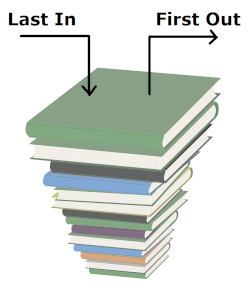
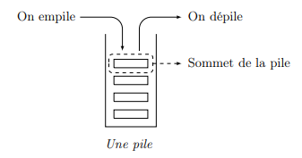
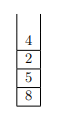
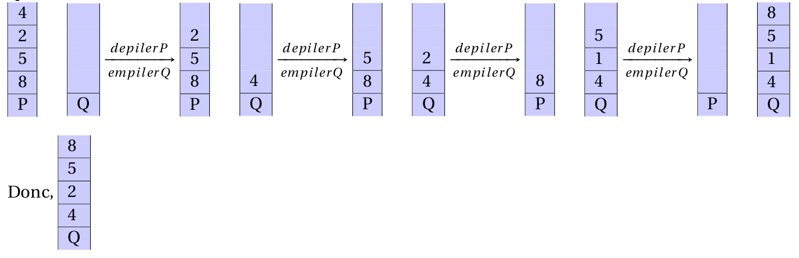
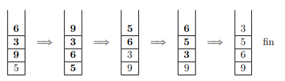

TP 13 - Les Piles Enoncé-Corrigé
| TD n°13 : Structures de données - Les Piles | Thème 1 : Structures de données |
|---|---|
| COURS et EXERCICES |

Les piles et les files sont deux structures de données linéaires qui permettent, au même titre que les listes, de gérer des séquences d’éléments. Ainsi, dans une pile et dans une file chaque élément est éga- lement repéré par sa position, il y a un premier, un dernier, chaque élément a un successeur (sauf le premier) et un prédécesseur (sauf le dernier). Les opérations disponibles pour ces deux structures sont assez proches car dans les deux cas, on veut pouvoir : * créer une pile/file vide * connaître sa taille * lui ajouter un élément * lui retirer un élément * accéder à un élément particulier
Cependant, la politique d’ajout/retrait des éléments dans la séquence n’est pas la même. Le nom des opérations diffèrent également pour mieux distinguer les deux structures.
I. Les Piles
Il faut se représenter une pile comme. . . une pile de livres ! Seul le livre disposé sur le dessus est accessible : l’ajout et le retrait d’un livre ne peut donc se faire que sur le sommet de la pile.

➡ Interface d'une pile⚓︎
Interface d'une pile
Le jeu d'opérations disponibles pour une pile est :
construire_pile(): crée une pile videtaille(P): accès au nombre d'éléments dans la pilePempiler(P, e): ajoute l'élémenteau sommet de la pileP.depiler(P): retire l'élément au sommet de la pileP. Précondition :Pn'est pas vide.sommet(P): pour accéder (en lecture) au sommet de la pileP(sans le retirer de la pile). Précondition :Pn'est pas vide.
En anglais, l'opération
empilerest souvent notéepush, l'opérationdepilerest souvent notéepopet l'opérationtailleest souvent notéetop.
Remarque : Certaines signatures algorithmiques peuvent légèrement varier.
Par exemple, on peut parfois voir l'opération est_vide (qui teste si une pile est vide) à la place de taille (une pile est vide si et seulement si sa taille vaut 0) ou encore l'opération depiler qui renvoie également le sommet (donc l'opération sommet n'est plus nécessaire). C'est un choix libre qui ne change pas la nature de la structure de données abstraite mais la façon d'écrire des algorithmes.
➡ Représentation d'une pile et exemple⚓︎
Une pile contenant les éléments \(\text{'a'}\), \(\text{'b'}\) et \(\text{'c'}\) (\(\text{'a'}\) étant le sommet et donc \(\text{'c'}\) le fond de la pile) sera représentée :
Exemple
On considère la pile P : \(\text{>'a', 'b', 'c']}\). Voici comment la manipuler :
| Opération | Contenu de la pile |
|---|---|
empiler(P, 'e') |
\(\text{>'e', 'a', 'b', 'c']}\) |
depiler(P) |
\(\text{>'a', 'b', 'c']}\) |
depiler(P) |
\(\text{>'b', 'c']}\) |
sommet(P) |
renvoie \(\text{'b'}\) |
depiler(P) |
\(\text{>'c']}\) |
empiler(P, 'm') |
\(\text{>'m', 'c']}\) |
taille(P) |
renvoie 2 |
➡ Applications des piles⚓︎
Les piles sont très utilisées en informatique. Voici quelques usages caractéristiques :
- Les algorithmes récursifs utilisent une pile d'appel pour mémoriser les contextes d'exécution de chaque appel. (déjà abordé)
- Dans un navigateur web, une pile sert à mémoriser les pages Web visitées. L'adresse de chaque nouvelle page visitée est empilée et l'utilisateur dépile l'adresse courante pour accéder à la page précédente en cliquant le bouton « Afficher la page précédente ».
- La fonction « Annuler la frappe » (en anglais Undo, le célèbre CTRL+F) d'un traitement de texte mémorise les modifications apportées au texte dans une pile.
- On peut aussi utiliser une pile pour parcourir (en profondeur) un graphe et mémoriser les sommets visités. (voir Thème 5 : Algorithmique)
- La vérification du bon parenthésage d'une expression peur également se faire à l'aide d'une pile.
- etc.
➡ Implémentations⚓︎
Une pile est généralement implémentée par :
- un tableau (redimensionnable ou non)
- ou par une liste chaînée.
Selon le cas, il faudra veiller à ce que l'implémentation soit la plus efficace possible.
- Si on utilise un tableau, les opérations
empileretdepilerseront plus efficaces si elles se font à la fin du tableau plutôt qu'au début car cela ne nécessite pas de décaler les autres éléments. - En revanche, si on utilise une liste chaînée, elles seront plus efficaces si elles ont lieu au début (car pour accéder au dernier élément il faut parcourir tous les éléments de proche en proche à partir du premier qui est le seul accessible).
II. Exercices sur les piles
Activité 1 : Manipulation des piles
- On considère la séquence d'instructions suivantes. Indiquez le résultat à chaque étape.
P = construire_pile() empiler(P, 1) empiler(P, 2) empiler(P, 3) s = sommet(P) depiler(P) depiler(P) empiler(P, s) - Ecrivez la séquence d'instructions permettant d'obtenir l'évolution suivante pour une pile
P.
| Etat de la pile P | Instructions (à compléter) |
|---|---|
| \(\text{>]}\) | |
| \(\text{>3]}\) | |
| \(\text{>1, 3]}\) | |
| \(\text{>4, 1, 3]}\) | |
| \(\text{>1, 3]}\) | |
| \(\text{>3]}\) | |
| \(\text{>]}\) |
Activité 2 : Première implémentation d'une pile (avec le type `list` de Python)
Interface
On définit le type abstrait Pile par ses opérations :
- création de pile vide
empiler: ajout au sommetdepiler: retrait du sommetsommet: accès (en lecture) au sommettaille: accès au nombre d'éléments
L'objectif est d'implémenter ce type abstrait en utilisant le type prédéfini list de Python (tableau dynamique = redimensionnable). Les éléments sont ajouter/retirer à la fin pour des raisons d'efficacité. Vous utiliserez le paradigme objet.
Question 1
Créez une classe Pile implémentant ce type abstrait. Les objets de cette classe auront un attribut appelé contenu qui est le contenu de la pile stocké un objet list de Python. Indication : il faudra utiliser les méthodes append et pop du type list.
class Pile:
def __init__(self):
self.contenu=[]
def empiler(self,e):
self.contenu.append(e)
def depiler(self):
if self.contenu!=[]:
self.contenu.pop()
def sommet(self):
if self.contenu!=[]:
return self.contenu[-1]
def taille(self):
return len(self.contenu)
Question 2
Définissez la méthode spéciale __repr__ pour afficher le contenu d'une pile comme une list Python.
Attention : la méthode __repr__ doit renvoyer une chaîne de caractères (conversion avec la fonction str).
class Pile:
def __init__(self):
self.contenu=[]
def empiler(self,e):
self.contenu.append(e)
def depiler(self):
if self.contenu!=[]:
self.contenu.pop()
def sommet(self):
if self.contenu!=[]:
return self.contenu[-1]
def taille(self):
return len(self.contenu)
def __repr__(self):
ch = ""
for e in self.contenu:
ch = str(e) + "," + ch # ne pas oublier de convertir les éléments en chaine de caractères
ch = ch[:-1] # pour enlever la dernière virgule
ch = ">" + ch+']'
return ch
Question 3
Modifiez la méthode __repr__ pour afficher les piles avec la notation du cours : \(\text{>...]}\). Attention à l'odre des éléments, dans cette représentation le sommet de la pile est à gauche.
Exemple
on souhaite que le code
P = Pile()
print(P)
P.empiler('a')
print(P)
P.empiler('c')
print(P)
P.empiler('b')
print(P)
P.depiler()
print(P)
P.empiler('z')
print(P)
produise l'affichage
>]
>a]
>c,a]
>b,c,a]
>c,a]
>z,c,a]
Activité 3 : Renverser un objet
On souhaite renverser une liste en utilisant une pile. Renverser la liste [1, 2, 3] donne une nouvelle liste [3, 2, 1].
Question 1 :
Proposez l'algorithme d'une fonction renverser permettant de renverser une liste en utilisant une pile.
Question 2
Ecrivez une fonction renverse(L) qui permet de renverser une liste L.
def renverser(P):
P1=Pile()
for k in range(P.taille()):
v=P.sommet()
P.depiler()
P1.empiler(v)
return P1
#Test
P= Pile()
P.empiler('a')
P.empiler('c')
P.empiler('b')
P.depiler()
P.empiler('z')
print(P)
P=renverser(P)
print(P)
Activité 4 : Vérifier le bon parenthésage d'une expression
Voici deux expressions mal parenthésées : \(2(x-1)(4(x+3)\) et \(2(x-1))(4(x+3)\)
En voici une bien parenthésée : \(3(x-1)(4(x+3)-2)\).
On souhaite écrire une fonction verif_parenthesage(expression) qui renvoie Vrai si l'expression passée en argument est bien parenthésée et Faux sinon. On suppose que l'expression est une chaîne de caractères
Spécification :
- Entrée : une chaîne de caractères
expression - Sortie : un booléen
OK - Rôle :
OK = Vraisi et seulement si le parenthésage dansexpressionest correct - Précondition : les caractères à tester sont
(et).
Idée de l'algorithme :
- On consulte les caractères un à un dans l'ordre de la chaîne
- Si on voit une parenthèse ouvrante, il faut attendre pour trouver la fermante correspondante. On peut ajouter cette parenthèse ouvrante à une pile en attendant de trouver la fermante correspondante.
- Si on voit une fermante, la dernière ouvrante qui n'a pas encore été associée, celle au sommet de la pile, doit normalement lui correspondre.
Comme on a besoin de trouver la dernière parenthèse ouvrante pas encore associée, une pile est appropriée pour conserver les ouvrantes non encore associées car la dernière se trouve alors au sommet de la pile (donc facilement accessible).
Question 1
Proposez un jeu de tests de qualité pour cette fonction avec des assert.
Question 2
Ecrivez une fonction verif_parenthesage(expression) qui convient. Elle doit passer tous les tests avec succès bien sûr.
def verif_parenthesage(expression):
OK = True
P = Pile() # création pile vide
# à compléter
# jeu de tests à recopier ici
Activité 5 : Deuxième implémentation d'une pile (avec des listes chaînées)
Importez la classe ListeChainee du TD 12 listechainee.py qui a été créé dans l'activité sur les listes chaînées puis implémentez une classe Pile par une liste chaînée. On rappelle que les opérations d'ajout/retrait pour une liste chaînée sont efficaces au tête de liste.
III. Exercices sur les piles - Sujet BAC
Sujet zéro - Exercice 1
Cet exercice porte sur la notion de pile et sur la programmation de base en Python.
On rappelle qu’une pile est une structure de données abstraite fondée sur le principe « dernier arrivé, premier sorti » :

On munit la structure de données Pile de quatre fonctions primitives définies dans le tableau ci-dessous. :
Structure de données abstraite : Pile
Utilise : Éléments, Booléen
Opérations :
- creer_pile_vide : ∅ → Pile
creer_pile_vide() renvoie une pile vide - est_vide : Pile → Booléen
est_vide(pile) renvoie True si pile est vide, False sinon - empiler : Pile, Élément → Rien
empiler(pile, element) ajoute element au sommet de la pile - depiler : Pile → Élément
depiler(pile) renvoie l’élément au sommet de la pile en le retirant de la pile
Question 1 :
On suppose dans cette question que le contenu de la pile P est le suivant (les éléments étant empilés par le haut) :

Quel sera le contenu de la pile Q après exécution de la suite d’instructions suivante ?
1 Q = creer_pile_vide ()
2 while not est_vide ( P ):
3 empiler (Q , depiler ( P ))

Question 2 :
- On appelle hauteur d’une pile le nombre d’éléments qu’elle contient. La fonction hauteur_pile prend en paramètre une pile P et renvoie sa hauteur. Après appel de cette fonction, la pile P doit avoir retrouvé son état d’origine.
Exemple : si P est la pile de la question 1 :hauteur_pile(P) = 4.
Recopier et compléter sur votre copie le programme Python suivant implémentant la fonctionhauteur_pileen remplaçant les ??? par les bonnes instructions.
1 def hauteur_pile ( P ):
2 Q = creer_pile_vide ()
3 n = 0
4 while not ( est_vide ( P )):
5 ???
6 x = depiler (P )
7 empiler (Q ,x )
8 while not ( est_vide ( Q )):
9 ???
10 empiler (P , x )
11 return ???
max_pile ayant pour paramètres une pile P et un entier i. Cette fonction renvoie la position j de l’élément maximum parmi les i derniers éléments empilés de la pile P.Après appel de cette fonction, la pile P devra avoir retrouvé son état d’origine. La position du sommet de la pile est 1.
Exemple : si P est la pile de la question 1 :
max_pile(P, 2) = 1
def hauteur_pile(P): Q=creer_pile_vide() n=0 while not est_vide(P): n+=1 x=depiler(P) empiler(Q,x) while not est_vide(Q): x=depiler(Q) empiler(P,x) return n
Explication
Q=creer_pile_vide()
n=0
while not est_vide(P):
n+=1
x=depiler(P)
empiler(Q,x)
Maintenant il faut remettre la pile P à l’état initial, d’où la deuxième partie du programme :
while not est_vide(Q):
x=depiler(Q)
empiler(P,x)
def max_pile(P,i): # si la pile comporte moins de i élément ou que i=0 on renvoie 0 if i > hauteur_pile(P) or i==0: return 0 maxi = depiler(P) Q = creer_pile_vide() empiler(Q,maxi) j = 1 indice = 1 while j < i: j = j + 1 x = depiler(P) if x > maxi: maxi = x indice = j empiler(Q,x) while not est_vide(Q): empiler(P, depiler(Q)) return indice
Question 3 :
Créer une fonction retourner ayant pour paramètres une pile P et un entier j. Cette fonction inverse l’ordre des j derniers éléments empilés et ne renvoie rien. On pourra utiliser deux piles auxiliaires.
Exemple : si P est la pile de laquestion 1(a), après l’appel de retourner(P, 3), l’état de la pile P
sera :

def retourner(P,j):
Q1 = creer_pile_vide()
Q2 = creer_pile_vide()
i = 0
while not est_vide(P) and i < j:
i = i + 1
x = depiler(P)
empiler(Q1, x)
while not est_vide(Q1):
x = depiler(Q1)
empiler(Q2, x)
while not est_vide(Q2):
x = depiler(Q2)
empiler(P, x)
Question 4 :
L’objectif de cette question est de trier une pile de crêpes.
On modélise une pile de crêpes par une pile d’entiers représentant le diamètre de chaque crêpe. On
souhaite réordonner les crêpes de la plus grande (placée en bas de la pile) à la plus petite (placée en
haut de la pile).
On dispose uniquement d’une spatule que l’on peut insérer dans la pile de crêpes de façon à retourner
l’ensemble des crêpes qui lui sont au-dessus.
Le principe est le suivant :
- On recherche la plus grande crêpe.
- On retourne la pile à partir de cette crêpe de façon à mettre cette plus grande crêpe tout en haut de la pile.
- On retourne l’ensemble de la pile de façon à ce que cette plus grande crêpe se retrouve tout en bas.
- La plus grande crêpe étant à sa place, on recommence le principe avec le reste de la pile
Exemple :

Créer la fonction tri_crepes ayant pour paramètre une pile P. Cette fonction trie la pile P selon la
méthode du tri crêpes et ne renvoie rien.
On utilisera les fonctions créées dans les questions précédentes.
Exemple :
Si la pile P est  après l’appel de
après l’appel de tri_crepes(P), la pile P devient 
def tri_crepes(P):
N = hauteur_pile(P)
i = N
while i > 1:
j = max_pile(P,i)
retourner(P,j)
retourner(P,i)
i -= 1
Sujet Métropole 7 Juin 2021 - Exercice 2
Cet exercice traite des notions de piles et de programmation orientée objet.
On crée une classe Pile qui modélise la structure d'une pile d'entiers.
Le constructeur de la classe initialise une pile vide.
La définition de cette classe sans l’implémentation de ses méthodes est donnée ci-dessous.
class Pile:
def __init__(self):
"""Initialise la pile comme une pile vide."""
def est_vide(self):
"""Renvoie True si la liste est vide, False sinon."""
def empiler(self, e):
"""Ajoute l'élément e sur le sommet de la pile, ne renvoie rien."""
def depiler(self):
"""Retire l’élément au sommet de la pile et le renvoie."""
def nb_elements(self):
"""Renvoie le nombre d'éléments de la pile. """
def afficher(self):
"""Affiche de gauche à droite les éléments de la pile, du fond
de la pile vers son sommet. Le sommet est alors l’élément
affiché le plus à droite. Les éléments sont séparés par une
virgule. Si la pile est vide la méthode affiche « pile
vide »."""
Seules les méthodes de la classe ci-dessus doivent être utilisées pour manipuler les objets Pile.
1.a
Écrire une suite d’instructions permettant de créer une instance de la classe Pile affectée à une variable pile1 contenant les éléments 7, 5 et 2 insérés dans cet ordre.
Ainsi, à l’issue de ces instructions, l’instruction pile1.afficher() produit l’affichage : 7, 5, 2.
pile1 = Pile()
pile1.empiler(7)
pile1.empiler(5)
pile1.empiler(2)
1.b
Donner l’affichage produit après l’exécution des instructions suivantes.
element1 = pile1.depiler()
pile1.empiler(5)
pile1.empiler(element1)
pile1.afficher()
7,5,5,2
2.
On donne la fonction mystere suivante :
def mystere(pile, element):
pile2 = Pile()
nb_elements = pile.nb_elements()
for i in range(nb_elements):
elem = pile.depiler()
pile2.empiler(elem)
if elem == element:
return pile2
return pile2
a. Dans chacun des quatre cas suivants, quel est l’affichage obtenu dans la console ?
- Cas n°1
>>>pile.afficher() 7, 5, 2, 3 >>>mystere(pile, 2).afficher() -
Cas n°2
>>>pile.afficher() 7, 5, 2, 3 >>>mystere(pile, 9).afficher() -
Cas n°3
>>>pile.afficher() 7, 5, 2, 3 >>>mystere(pile, 3).afficher() -
Cas n°4
>>>pile.est_vide() True >>>mystere(pile, 3).afficher()
b. Expliquer ce que permet d’obtenir la fonction mystere.
a)
-
cas n°1 : 3, 2
-
cas n°2 : 3, 2, 5, 7
-
cas n°3 : 3
-
cas n°4 : pile vide
b)
La fonction mystere renvoie une pile qui contiendra tous les éléments de la pile passée en paramètre (pile) à condition qu’ils soient situés au-dessus de l’élément passé en paramètre (element). L’élément element sera lui aussi présent dans la pile renvoyée par la fonction.
3.
Écrire une fonction etendre(pile1, pile2) qui prend en arguments deux objets Pile appelés pile1 et pile2 et qui modifie pile1 en lui ajoutant les éléments de pile2 rangés dans l'ordre inverse. Cette fonction ne renvoie rien.
On donne ci-dessous les résultats attendus pour certaines instructions.
>>>pile1.afficher()
7, 5, 2, 3
>>>pile2.afficher()
1, 3, 4
>>>etendre(pile1, pile2)
>>>pile1.afficher()
7, 5, 2, 3, 4, 3, 1
>>>pile2.est_vide()
True
def etendre(pile1, pile2):
while not pile2.est_vide():
x = pile2.depiler()
pile1.empiler(x)
4.
Écrire une fonction supprime_toutes_occurences(pile, element) qui prend en arguments un objet Pile appelé pile et un élément element et supprime tous les éléments element de pile.
On donne ci-dessous les résultats attendus pour certaines instructions.
>>>pile.afficher()
7, 5, 2, 3, 5
>>>supprime_toutes_occurences (pile, 5)
>>>pile.afficher()
7, 2, 3
def supprime_toutes_occurences(pile, element):
p2 = Pile()
while not pile.est_vide():
x = pile.depiler()
if x != element:
p2.empiler(x)
while not p2.est_vide():
x = p2.depiler()
pile.empiler(x)
Sujet Centres-Etrangers 2021 - Exercice 5
Notion abordée : structures de données : les piles.
Dans cet exercice, on considère une pile d'entiers positifs. On suppose que les quatre fonctions suivantes ont été programmées préalablement en langage Python :
empiler(P, e) : ajoute l'élément e sur la pile P ;
depiler(P) : enlève le sommet de la pile P et retourne la valeur de ce sommet ;
est_vide(P) : retourne True si la pile est vide et False sinon ;
creer_pile() : retourne une pile vide.
Dans cet exercice, seule l'utilisation de ces quatre fonctions sur la structure de données pile est autorisée.
1.
Recopier le schéma ci-dessous et le compléter sur votre copie en exécutant les appels de fonctions donnés. On écrira ce que renvoie la fonction utilisée dans chaque cas, et on indiquera None si la fonction ne retourne aucune valeur.


2.
On propose la fonction ci-dessous, qui prend en argument une pile P et renvoie un couple de piles :
def transforme(P) :
Q = creer_pile()
while not est_vide(P) :
v = depile(P)
empile(Q,v)
return (P,Q)
Recopier et compléter sur votre copie le document ci-dessous


3.
Ecrire une fonction en langage Python maximum(P) recevant une pile P comme argument et qui renvoie la valeur maximale de cette pile. On ne s’interdit pas qu’après exécution de la fonction, la pile soit vide.
On souhaite connaître le nombre d’éléments d’une pile à l’aide de la fonction taille(P)

def maximum(P):
m=depiler(P)
while not est_vide(P):
v = depiler(P)
if v > m:
m = v
return m
4.
a. Proposer une stratégie écrite en langage naturel et/ou expliquée à l’aide de schémas, qui permette de mettre en place une telle fonction.
b. Donner le code Python de cette fonction taille(P) (on pourra utiliser les cinq fonctions déjà programmées).
Il suffit de mettre place une boucle qui s'arrêtera quand la pile P sera vide. À chaque tour de boucle, on dépile P, on empile les valeurs précédemment dépilées dans une pile auxiliaire Q et on incrémente un compteur de 1. Une fois la boucle terminée, on crée une nouvelle boucle où on dépile Q et on empile P avec les valeurs dépilées (l’idée est de retrouver l’état originel de pile. Il suffit ensuite de renvoyer la valeur du compteur.
def taille(P):
cmp = 0
Q = creer_pile()
while not est_vide(P):
v = depiler(P)
empiler(Q,v)
cmp = cmp + 1
while not est_vide(Q):
v = depiler(Q)
empiler(P,v)
return cmp